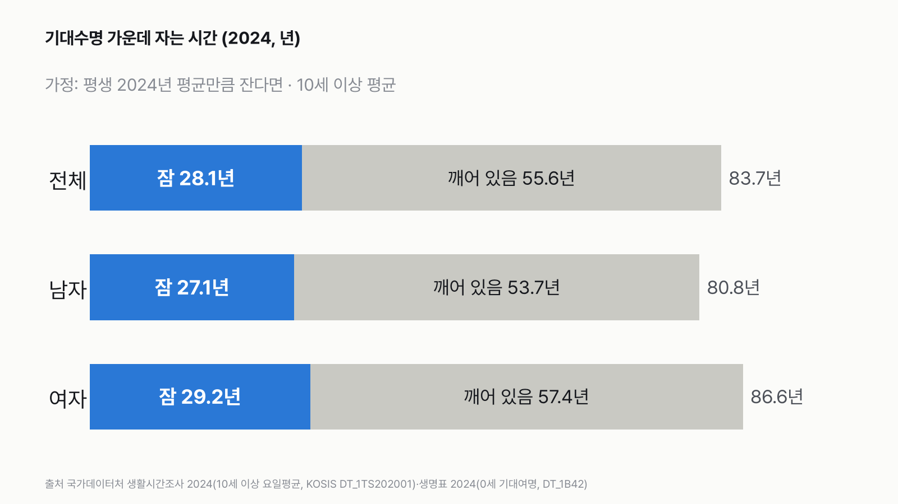
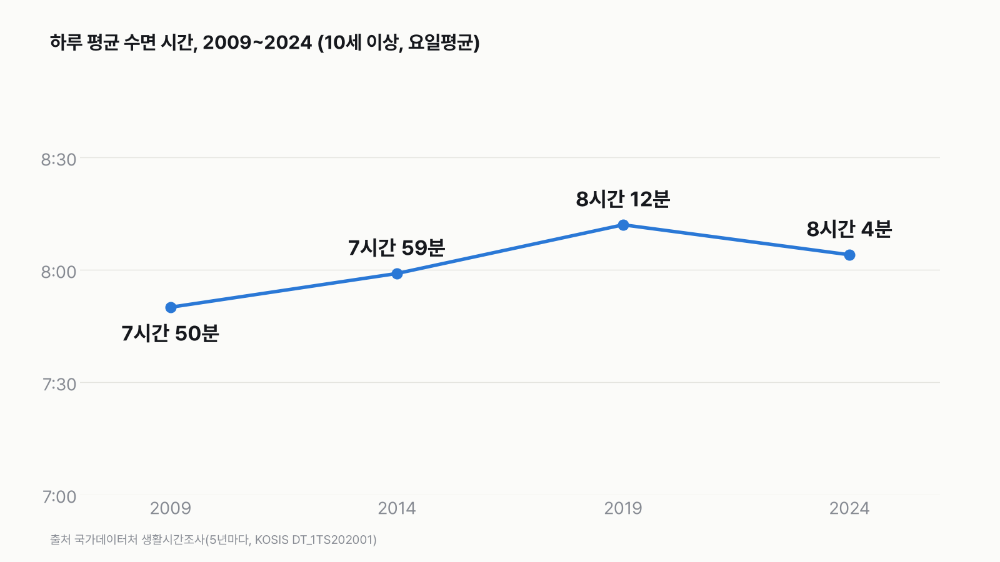

한국인은 평생 몇 년을 잘까?
83.7년 중 28.1년이면 인생의 3분의 1을 자는 데 써요. 다만 '지금 하루 평균대로 평생 잔다면'이라는 가정으로 낸 숫자예요. 아기 때 더 오래 자는 것 같은 나이별 차이는 넣지 않았어요.

3줄 요약
- 한국 사람(10세 이상)은 하루 평균 8시간 4분을 자요. 하루의 33.6%예요.
- 이 평균대로 기대수명 83.7년을 산다고 가정하면, 평생 약 28.1년을 자요.
- 남자는 약 27.1년, 여자는 약 29.2년이에요. 여자가 하루 3분 더 자고, 기대수명도 더 길어서예요.
하루 8시간 4분 → 1년이면 약 123일
2024년 생활시간조사에서 10세 이상 한국 사람의 하루 평균 수면 시간은 8시간 4분이에요. 평일과 주말을 합친 평균이에요. 하루 24시간 중 33.6%예요. 1년 365일로 모으면 약 123일을 자요.
평생 약 28.1년
2024년 생명표의 기대수명(0세)은 83.7년이에요. 하루의 33.6%를 83.7년 동안 자면 약 28.1년이에요.
| 구분 | 하루 평균 수면 | 기대수명 | 평생 자는 시간(가정) |
|---|---|---|---|
| 전체 | 8시간 4분 | 83.7년 | 약 28.1년 |
| 남자 | 8시간 3분 | 80.8년 | 약 27.1년 |
| 여자 | 8시간 6분 | 86.6년 | 약 29.2년 |
- 깨어 있는 시간은 남은 약 55.6년이에요.
- 남녀 차이는 약 2.1년이에요. 하루 수면 시간은 3분 차이라서, 대부분 기대수명 차이(5.8년)에서 나와요.
하루 수면은 2019년보다 8분 짧아요
같은 조사는 5년마다 해요. 하루 평균 수면 시간은 2009년 7시간 50분, 2014년 7시간 59분, 2019년 8시간 12분, 2024년 8시간 4분이에요. 2024년 값은 2019년보다 8분 짧고, 2009년보다는 14분 길어요. 네 번의 조사에서 가장 짧은 해와 가장 긴 해의 차이는 22분이에요. 이 표로는 왜 바뀌었는지 알 수 없어요.

숫자를 다시 보며
'한국인은 평생 28.1년을 잔다'고 잰 숫자가 아니에요. 10세 이상의 2024년 하루 평균을 태어나서부터 평생 그대로 곱한 계산이에요. 아기와 어린이는 더 오래 자고, 나이에 따라 잠 시간은 달라져요. 그래도 '인생의 3분의 1'이라는 크기는 잠이 얼마나 큰 시간인지 보여 줘요. 여러분은 어젯밤 몇 시간 잤나요?
이 숫자는 어디서 왔나요
출처
기준일 생활시간조사 2024년(5년마다 조사), 생명표 2024년 값이에요. KOSIS 값은 2026년 11월 14일에 받았어요.
국가데이터처생활시간조사
- 행동분류별 평균시간KOSIS DT_1TS202001
하루 수면 시간, 흐름
국가데이터처생명표
- 완전생명표KOSIS DT_1B42원본 보기
기대수명
어떻게 셌나요
- 하루 수면 시간: 국가데이터처 「생활시간조사」 2024, 10세 이상, 요일평균(평일·토요일·일요일을 합친 평균), 행동분류 '수면'(KOSIS DT_1TS202001). 자지 않은 사람 없이 모두를 넣은 평균이에요.
- 기대수명: 국가데이터처 「생명표」 2024, 0세 기대여명(KOSIS DT_1B42).
- 평생 자는 시간: 하루 수면 시간 ÷ 24 × 기대수명.
- 가정: 평생 2024년 하루 평균만큼 잔다고 봤어요(지금 하루 평균대로 평생).
| 항목 | 값 | 잰 것 / 가정 |
|---|---|---|
| 하루 평균 수면(10세 이상) | 8시간 4분(8.07시간) · 남 8시간 3분 · 여 8시간 6분 | 잰 것(조사) |
| 기대수명(0세) | 83.7년 · 남 80.8년 · 여 86.6년 | 잰 것(생명표) |
| 평생 자는 시간 | 약 28.1년 · 남 27.1년 · 여 29.2년 | 계산 |
| 평생 2024년 평균만큼 잔다 | — | 가정 |
한계 4가지
이 데이터로 말할 수 없는 것
- 가정: 평생 2024년 평균만큼 잔다면이에요. 10세 이상 평균을 0세부터 평생에 그대로 곱했어요.
- 아기와 어린이는 더 오래 자고, 나이가 들면 잠 시간이 바뀌어요. 그 차이는 넣지 않았어요.
- 2024년 기대수명을 지금 태어난 아기가 그대로 산다고 본 것도 가정이에요.
- 생활시간조사는 이틀 동안 적은 시간일지예요. 잠든 시간을 기기로 잰 값이 아니에요.
새 글 나오면 받아 보기
피드 리더 앱에 이 사이트 주소를 한 번 넣어 두면, 새 글이 올라올 때 앱에 떠요. 가입이나 메일 주소는 필요 없어요.
받는 법 보기
- 피드 리더 앱을 하나 골라요. 새 글을 모아 보여 주는 앱이에요. 예를 들면 Feedly나 Inoreader가 있어요. 둘 다 무료고 웹·휴대폰에서 써요.
- 앱에서 '구독 추가'(+)를 누르고 아래 주소를 붙여 넣어요.
- 끝이에요. 새 글이 올라오면 앱 목록에 떠요.
https://protofu.github.io/opendata-insight/feed.xmlFeedly를 쓴다면 여기를 눌러 바로 추가할 수도 있어요.